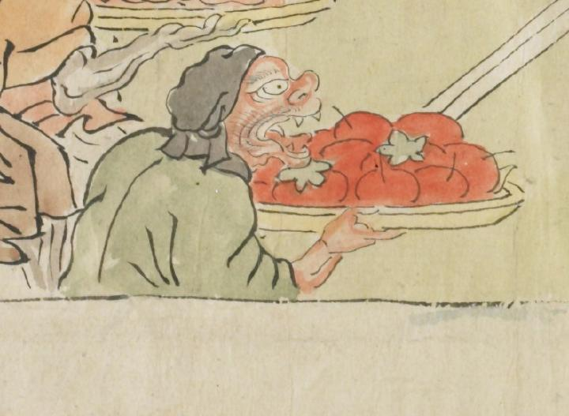

果物のようなものを運ぶ鬼。黒い頭巾らしきものを頭に巻き、緑色の衣服を身にまとっている。口を大きく開け、鋭い牙を出している。
出典：親書誌：U426_nichibunken_0079：酒天童子絵巻；シュテンドウジエマキ／日付：2006／資源識別子：U426_nichibunken_0079_0008_0007
Copyright (c)2010- International Research Center for Japanese Studies, Kyoto, Japan. All rights reserved.